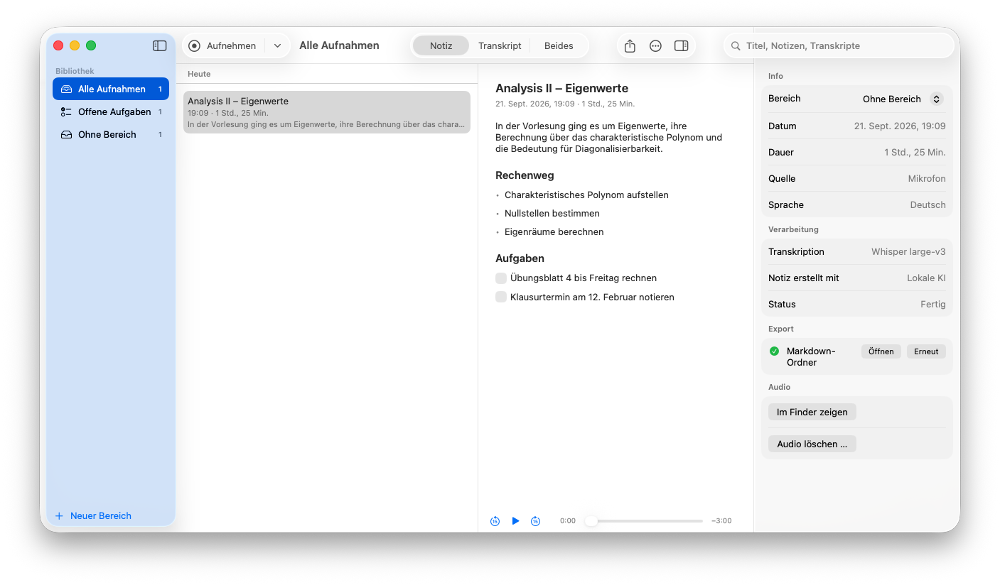
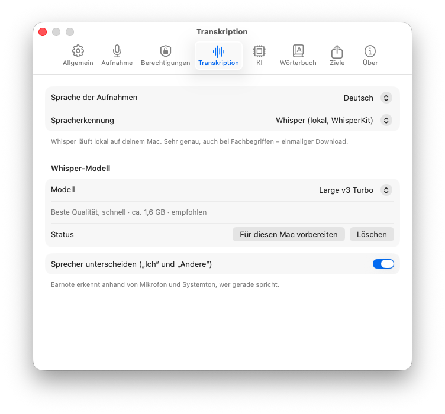
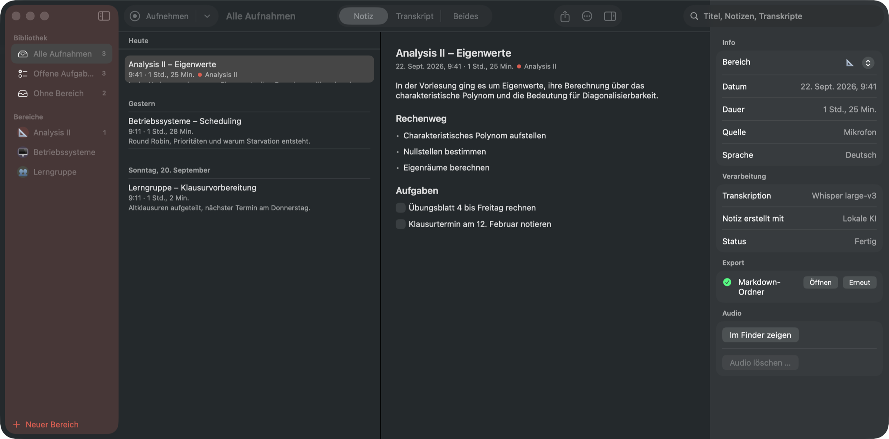

Earnote nimmt auf, transkribiert mit Whisper und macht daraus eine geordnete Notiz – alles auf deinem Mac. Ohne Konto, ohne Abo, ohne Cloud.
macOS 15 oder neuer · Apple Silicon · kostenlos · MIT-Lizenz
Oder mit Homebrew: brew tap louiskl/earnote && brew trust louiskl/earnote && brew install --cask earnote

So läuft es
⇧⌘R oder ein Klick in der Menüleiste. Mikrofon und Ton vom Mac werden zusammen aufgenommen.
Whisper transkribiert schon, während du noch im Raum sitzt. Danach bleibt kaum etwas übrig.
Zusammenfassung, Themen, Entscheidungen und Aufgaben zum Abhaken – wenige Minuten nach dem Stoppen.
Auf diesem Mac transkribiert · 12× schneller als Echtzeit
Die Vorlesung ging um Eigenwerte, ihre Berechnung über das charakteristische Polynom und warum sie für die Diagonalisierbarkeit wichtig sind.
Die Notiz
Earnote schreibt das, was du selbst geschrieben hättest, wenn du schnell genug gewesen wärst: eine kurze Zusammenfassung, die Themen, die wirklich vorkamen, Entscheidungen und Aufgaben zum Abhaken. Alles lässt sich bearbeiten oder mit einer eigenen Anweisung neu zusammenfassen – die KI-Fassung ist einen Klick entfernt.
Nachhören
Wenn es zu schnell ging, klickst du im Transkript auf die Zeit und hörst genau diese Stelle. Der Abschnitt, der gerade läuft, bleibt hervorgehoben, während du mitliest.
Beides gleichzeitig? Mit ⌘3 stehen Notiz und Transkript nebeneinander, und das Transkript scrollt beim Abspielen mit.
Falsch geschrieben
Richtig
Gilt für Titel, Notiz und Transkript – und wandert ins Wörterbuch, damit Whisper es beim nächsten Mal gleich richtig hört.
Namen & Begriffe
Namen von Dozentinnen und Dozenten, Modultitel, Fachbegriffe: Trag sie ins Wörterbuch ein, dann gibt Earnote sie Whisper und der KI mit, bevor daraus ein Fehler wird. Pro Bereich oder für alles.
Datenschutz
Die Transkription läuft lokal mit Whisper. Die Notizen schreibt ein Sprachmodell, das Earnote einmal lädt und danach auf deinem Gerät ausführt – ohne Konto, ohne API-Schlüssel, auch offline.
Aufnahmen, Transkripte und Notizen liegen in deinem Benutzerordner und werden nirgendwohin synchronisiert.
Keine Analyse, keine Absturzmeldungen, kein Server, der zu Earnote gehört.
Du kannst Claude, OpenAI, Gemini oder einen eigenen Server wählen – die App sagt deutlich, wenn Text den Mac verlässt.
Und sonst
Notiz drucken oder als sauberes PDF sichern – mit Überschriften, Stichpunkten und Aufgaben als Kästchen.
Einen Begriff in allen Transkripten finden, mit ⌘G durch die Fundstellen, nachhören.
Läuft ein Termin, heißt die Aufnahme „Lineare Algebra“ statt „Uni, 21. Sep“. Welche Kalender zählen, wählst du selbst.
⌃⌥⌘R startet und stoppt die Aufnahme aus jeder App – ohne erst ein Fenster zu suchen.
Zoom, Teams, Meet: Earnote fragt, ob es mitschreiben soll, und hört am Ende des Calls von selbst auf.
Jedes Fach und jeder Kunde bekommt eigene Farbe, eigene Anweisung an die KI und eigene Exportziele.
Notion, Obsidian, Logseq, Apple Notizen, Bear, Craft oder einfach ein Markdown-Ordner.
Eine Übersicht über alle Vorlesungen eines Fachs: Themen, roter Faden, Prüfungshinweise.
Frage-Antwort-Karten direkt aus der Vorlesung – in der Notiz änderbar, Export für Anki.
Offene Aufgaben nach Apple Erinnerungen, Things oder Todoist – je Fach eine eigene Liste.
Earnote filtert die Sätze heraus, die Whisper sich in Pausen ausdenkt, statt sie aufzuschreiben.
In der App


Fragen
26 MB, signiert und beglaubigt. Installieren, Mikrofon erlauben, fertig.